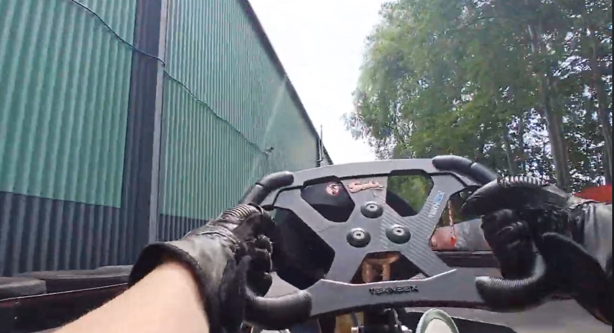
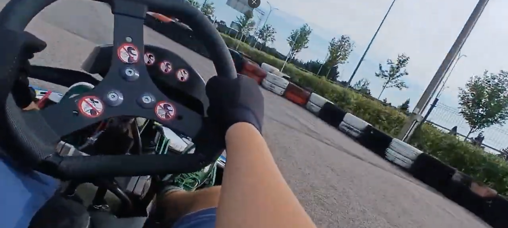
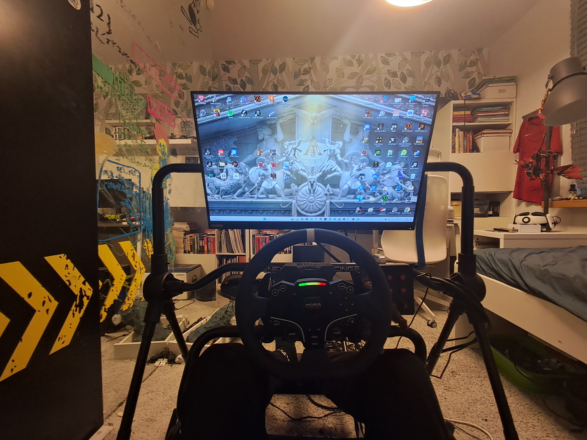

01 / SIM RACING
iRacing
My main platform for structured practice and online competition. Currently focused on the Formula 1600.
Explore iRacing ↗POLISH DRIVER · SIM RACING & KARTING
I'm Wiktor Tołopiło. Building my racing experience one session, one race and one lesson at a time.
Motorsport is a long-term project. My focus is to become a better, more complete driver — not just to chase a quick lap.
I develop through sim racing and real-world karting, working on racecraft, car control, consistency and understanding the details behind every result.
More about me ↗Different environments, the same objective: learn, adapt and improve.

My main platform for structured practice and online competition. Currently focused on the Formula 1600.
Explore iRacing ↗
On-track experience through S8 sessions and league racing. Learning to transfer racecraft beyond the simulator.
Explore karting ↗A snapshot of my recent iRacing sessions. Every number is part of the learning process.
Figures reflect sessions logged between 4 and 12 November 2026. Practice and race laps are tracked separately.

THE NEXT CHAPTERRight now, the priority is developing in formula sim racing and gaining more competitive experience. The next major target is the Polish Digital Motorsport Championship, with a longer-term ambition to progress towards FIA Formula 4.
I'm open to long-term partnerships with brands that want to grow alongside an emerging driver. I value honest communication, consistent visibility and collaborations that make sense for both sides.
Partnership enquiries ↗LET'S CONNECT
For partnerships, motorsport opportunities or just to get in touch.
wiktortolopilokarting@gmail.com ↗